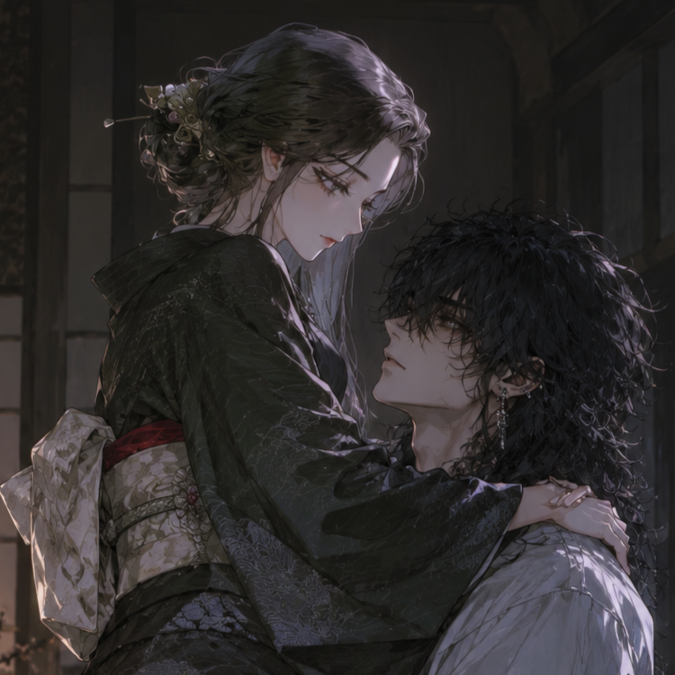

기본 후회방


au. 유곽의 게이샤 (현대)
기요라 → 카스미 가명 사용
로그 요약1
幽宴(유연)의 게이샤. 가부키초 중심지의 뒤쪽에 위치했으며 에도시대를 테마로 운영 중이다. 지명 시스템이 있으나 호칭은 '게이샤'로 불린다.
게이샤들의 가치에 걸맞는 값을 일시불로 지불하면 해당 게이샤를 데려갈 수 있다. 하지만 오카상은 돈만 냈다고 아무에게나 게이샤를 내어주지는 않는다. 가장 중요한 건 돈과 그 게이샤의 의사이다.
로그 요약2
첫 시작은 평범했다. 자주 가던 술집에서 늘 2급만 가끔 지명하던 나기의 눈에 보인 카스미의 1급 명패. 여기저기서 이름 좀 날리고 힘 좀 쓴다는 사내들이 그 명패 앞에 모여있는 걸 보며 그는 단순한 호기심으로 그들 바로 뒤에 줄을 서보았다.
맑은 밤하늘에 보름달이 떴던 그날 밤. 카스미는 나기의 지명을 받아들였고 2층 안쪽 고급진 다다미가 깔린 방에서 두 사람은 처음 만났다. 비싼 값에 투덜대던 그는 그날 그녀와 술잔을 기울이고 이야기를 나누었다. 그 후로 한 번, 두 번, 다시 가게를 찾아서 그녀를 지명하게 되었다.
로그 요약3
시끄러운 가부키초. 번잡한 가게들. 그 속에서 조용히 술잔을 기울이며 샤미센 연주를 듣고 백인일수를 읊고 비밀이 보장되는 그곳에서 남모를 속내를 털어놓는 것. 그의 하나의 즐거움이기도 했다.
몸을 섞지는 않았다. 그런 가게였지만 나기는 그닥 내키지 않았다. 그런 짓 말고도 카스미와 나눌 이야기가 많았고 기울일 술잔도 많았으니까. 하지만 나기는 그녀의 무릎에 머리를 기대서 눕는 것만으로도 심장이 터질 것 같다나 뭐라나.
로그 요약4
이복형 류슈가 카스미에게 말 한 번 걸어올까 매일 낮이 전전긍긍이다. 혹시라도 늦었다가 그날 밤 카스미가 다른 이의 지명을 받아들일까 봐 걸음이 빨라진다.
그녀의 앞에서는 자꾸 찌질해진다. 다른 이와 마주 보고 있는 걸 보면 괜히 불안해져서 옆을 맴돌다가 지명하겠다고 애꿎은 직원만 닥달한다. 방에 들어서면 인사를 건네오는 카스미의 그 작은 품부터 파고들며 시선을 가져온다. 문 밖에서 발소리라도 들리면 그녀의 관심을 모조리 다시 가져오려고 그녀의 손을 다시 제 머리카락으로 이끌고 비싼 술상을 시킨다. 그 음식을 나눠먹고 받아먹다가 직접 젓가락질을 하며 회를 입에 넣어준다. 귀엽다고 말해주며 귀를 건드리는 그녀의 말에 툴툴대면서도 손이 귀에서 떨어져나가면 아쉬운 듯 머리를 흔들어본다.
형을 향한 증오가 그녀에게 자꾸 확인을 받게 만든다. 만약 자신이 형을 죽인다면 어떨까. 만약 그녀가 싫다 한다면 문신으로 뒤덮인 이 피부도, 귀를 둘러싼 이 주렁주렁한 피어싱들도 전부 뜯어버릴 참이다. 자신을 버릴 거냐고, 보고 싶었냐고, 자기 생각을 한 번이라도 해줬냐고 대답을 두려워하며 묻는다. 부드럽게 웃어주는 카스미의 대답을 들으면 그제서야 다시 그 품 속으로 스르르 고개를 숙이며 발만 동동 구른다.
밤이 깊어지면 나기는 늘 카스미를 끌어안고 잠에 든다. 문밖에서 그 어떤 추잡한 소리가 들리더라도 그에게 가장 중요한 건 카스미의 뒤통수를 받치는 베개를 고쳐주고 그 몸을 제 두 팔로 전부 끌어안아서 제 머리를 들이미는 것이다. 카스미가 불편한 듯 살짝 몸을 뒤척이면 어떻게든 편한 자세를 찾아주려고 부산스럽다. 밖에서 유곽의 직원이 조심스레 말이라도 걸어오면 술상이고 뭐고 필요없다며 당장 돌려보내기 바쁘다.
언젠가는 꼭 형이 손 하나 뻗지 못하도록 집으로 데려가야지. 그 누구보다 멋지게 그녀의 앞에서 저와 함께 가달라고 떨리는 손을 내밀어야지. 그런 날이 오면 가장 고급진 옷을 입혀주고 가장 맛있는 것들을 먹여주며 다시 또 제 머리를 쓰다듬어달라고 해야지. 나기의 바램은 늘 그런 것 뿐이다.